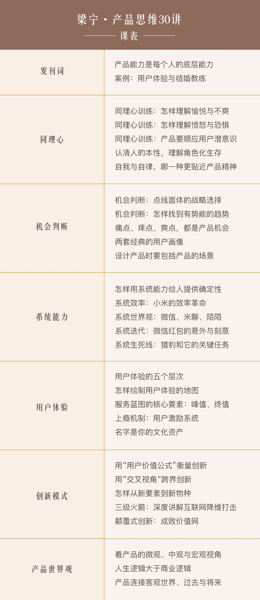

你好，欢迎来到《梁宁·产品思维30讲》。
我在IT和互联网行业工作了20多年，写过代码，做过销售，当过高管。创过业，卖过公司，也做过投资。
如果问我做过这么多的事，最喜欢哪一样？
我会说，做一个产品人，做产品。
为什么呢？
因为我觉得产品能力是人生的一个底层能力。
拥有产品能力，能让你有一种踩在地上的自信和踏实感。
为什么产品能力是人生的底层能力
我们大家都是从一无所有走过来的。
我还记得那种茫然无措的感受。
因为没有认知框架，所以每天面对着各种正面、负面的信息，任其冲击情绪，却不知道如何处置。这些信息是否重要，到底应该如何识别？
我们害怕自己的才华得不到赏识；自己努力了，却总是被diss；害怕没有得到正面的反馈，付出得不到回报。
还会有人会自怨自艾，没有家庭背景和靠山。
而在今天这个时代，如果让我给一个建议，那就是培养自己的产品能力。
以上这些都不重要，产品能力会给你自信。
为什么？
产品能力就是训练一个人：判断信息，抓住要点，整合有限的资源，把自己的价值打包成一个产品向世界交付，并且获得回报。
别怕茫然，别怕被diss，别怕推倒重来。
因为从一个普通人，到成为一个产品人的过程，其实就是一个人学习建立认知框架的过程。
先建立信息的秩序，再建立自己内心的秩序。在一片纷杂里，你会知道自己该放弃哪些点，抓住哪个点，慢慢建立起掌控。
这个过程里，你会碰到数不清的diss，被各种吐槽，被指着脸批评，还有数不清的推倒重来。这就是一个产品人生活的常态。
丘吉尔说：如果你到了地狱，那就继续保持前行。
产品的人生就是天天被打击。既然这就是生活的常态，放下担心，你会在打击中变得健壮。
所以，你就会拥有产品人的一项基础能力：抗挫折、抗打击的能力。
另外，别怕没有家庭背景，别怕没靠山、没干爹。
因为做一个产品人，我们只认一条 “用户驱动”。
从第一个用户走向第一桶金
今天，全球市值最高的7家公司，美国有微软、苹果、Google、Facebook，中国有腾讯、阿里、百度……
这些企业，在他们刚开始的时候，没有矿产土地资源，没有高官权贵加持。
就一帮年轻人，在租来的办公室，靠自己的大脑，靠自己的创造力，在互联网的空间里，“无中生有”地创造了以前没有的空间与体验。
改变了我们的生活，也改变了世界的面貌。
不到20年的时间，他们生长成当今世界上，拥有最多财富和社会影响力的个体。
一无所有的年轻人，从一个用户开始，拿到人生的第一桶金，然后建立自己的世界。
马化腾、马云、李彦宏、刘强东、王兴、李学凌、姚劲波等等，几乎都是这样从普通人，变成了行业大佬。
他们是怎么做到的呢？他们是如何拥有用户？如何建立“用户驱动”的呢？
这就是我这套课程要讲的内容。
产品思维，到底讲什么内容
我会用5大模块一共25讲，教你怎么看到用户、倾听用户、判断用户，怎么能够与用户建立连接，并且在用户的交互反馈中去迭代和优化。
教你怎么去观察，怎么去判断。
如何建立一种系统能力，以此去向用户交付一种确定性。
如何建立交互能力，接着在不断的连接与迭代中，深化你和用户的关系。
你可以说我这套课是讲产品的，你也可以说我这套课是讲人的。
或者说，这套课是从产品的专业视角，来看人和人关系的。
或者说，基于对人和人关系的感知，来讲怎么做产品的。
都对。
因为产品只是你用来服务用户的介质。科技会进步，产品会迭代，公司的形态、组织的形态都会发生变化。
但是你最终要服务的对象，他未被满足的需求，以及人性并没有那么大变化。
全课不仅有五大模块一共25讲的内容，再加上开篇和后续的产品世界观，总共有30讲。
感性一点说，通过这30讲，我希望帮助你拥有三个东西：
第一是一双眼睛，是发现痛点、找到破局点的敏锐之眼；
第二是一双手，是动手优化、着手改变的行动之手；
第三是一颗心，是洞察人性的同理心，懂得自己与用户，懂得产品上每个细节给到人的满足感、确认感和依赖感。
你能从这门课收获什么
我希望这门课能够帮到以下几类朋友：
我希望这些课程能够帮到那些曾经像我一样茫然的年轻人。
产品能力是动手能力、掌控能力。希望通过这30讲的课程和练习，你能够到找到与现实世界真切连接的踏实感，知道如何分辨要点，建立掌控感，不再茫然和被动。
我希望这些课程能够帮到那些希望自己有一技之长，能够踏实地生活的人。
相信自己的双手，相信自己的动手能力，比什么都踏实。
我希望这些课程能够帮到那些在世界上感到孤独的人。
世界是如此的不可知、不确定，但是通过我们的系统能力，我们可以应对和消化这种不确定。为他人的生活中，提供一点小小的确定与依赖，通过产品与人对话，与人连接，其实也是一种温暖。
我希望这些课程能够帮到那些立志优化这个世界，在这个世界上留下痕迹的人。
世界如此精彩，我们当然不能置身局外。
希望世界在你眼前展开，希望一切清晰与分明起来。
愿你能够在这个不确定的世界，建立自己的确定性，并与人彼此依赖。
愿你向这个世界交付你的价值，并且获得回报。
谢谢！
